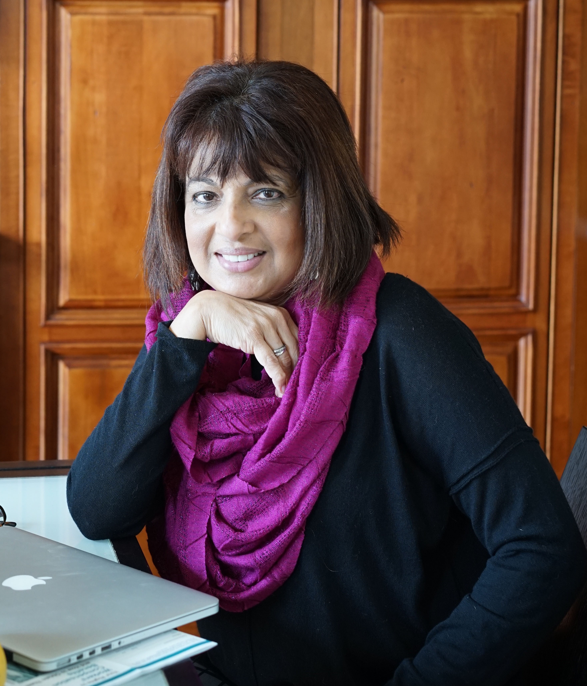

Marise is a Registered Dietitian in Private Practice in El Dorado Hills, CA. She has a Masters in Food, Nutrition and Dietetics from the University Of Bombay, India, and has published work in international forums. Upon arriving in the US, she attained accreditation with the Academy of Nutrition and Dietetics year at CSU Sacramento and UC Berkeley.

Marise is proficient in English, Hindi and Portuguese, and a working knowledge of Spanish. As a result of her working in the US and abroad and her love of food and travel, she has learned about foods of countries and cultures all over the world. She is a proficient cook and is always excited about cooking and eating the foods that she encounters.
Resume
Practising in Mumbai, India
Breachcandy Hospital
- Clinical Dietitan, 1980-1983
Cumballa Hill Surgical Hospital
- Chief Clinical Dietitian, 1983-1984
Sheri Louise Slimming Center
- Weight Loss Counseler, 1984-1987
Practising in the US
Sacramento WIC, Mercy Hospital (Folsom,CA)
- Clinical Dietitian, 2005-2008
Sutter Medical Center (Sacramento,CA)
- Medical Nutrition Therapy, 2006-Present
- One-on-One Counseling for Gestational Diabetes (Sweet Success), 2006-Present
- One-on-One Counseling for Type 2 Diabetes, 2006-Present
Sutter Center for Psychiatry (Sacramento,CA)
- Adult and Child Nutrition, 2008-2015
- Gestational Care, 2008-2015
- Weight Management, 2008-2015